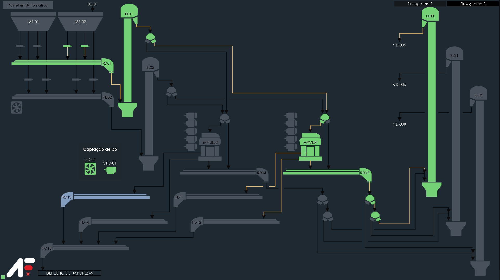

Fluxograma
Comandos do Menu
A(s) tela(s) do fluxograma abrange todo o escopo de controle do sistema de automação Fockink, a visualização do fluxograma é essencial para que o usuário tenha agilidade em detectar anomalias através da indicação do status de cada equipamento.
Os equipamentos representados na tela do fluxograma além de exibir o seu status, também podem ter interações com o usuário. Ao clicar sobre o equipamento é exibida a tela com status detalhado do equipamento, assim como a possibilidade de comandos sobre o mesmo.
Acionamento de Motores e Pneumáticos
Cada equipamento possui uma interface de controle individual, o operador pode ligar o equipamento em modo teste (não recomendado para operação), colocar em manutenção, efetuar o rearme do equipamento e inibir sensores, além de visualizar os status dos intertravamentos.
Para identificar o status de um determinado equipamento, se tem uma animação onde é realizada a troca da cor do mesmo conforme a tabela abaixo:
| Cor | Status |
|---|---|
| ■ | Desligado |
| ■ | Ligado |
| ■ | Ligando |
| ■ | Falha |
| ■ | Manutenção |
Manutenção
O sistema possui um controle de manutenção (Corretiva, Preventiva, Preditiva, outro), é possível intertravar um equipamento para fazer os reparos necessários e cadastrar o motivo da manutenção para analises futuras.
Pop Up Alarmes

| Índice | Descrição |
|---|---|
| 1 | Título. |
| 2 | Descrição do alarme. |
| 3 | Atalho para tela de alarmes. |
| 4 | Data e hora do alarme. |